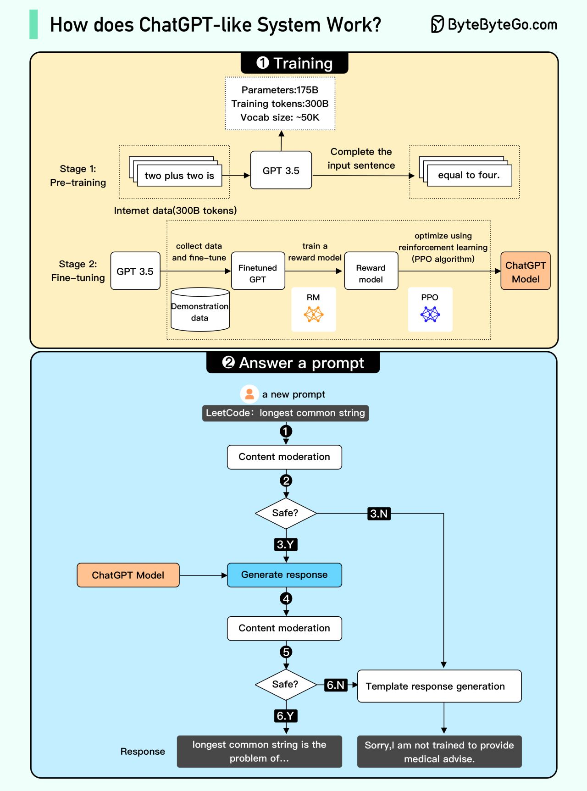

Since OpenAI hasn’t provided all the details, some parts of the
diagram may be inaccurate.
We attempted to explain how it works in the diagram above. The process
can be broken down into two parts.
Training
To train a ChatGPT model, there are two stages:
-
Pre-training: In this stage, we train a GPT model
(decoder-only transformer) on a large chunk of internet data. The
objective is to train a model that can predict future words given
a sentence in a way that is grammatically correct and semantically
meaningful similar to the internet data. After the pre-training
stage, the model can complete given sentences, but it is not
capable of responding to questions.
-
Fine-tuning: This stage is a 3-step process that
turns the pre-trained model into a question-answering ChatGPT
model:
-
Collect training data (questions and answers), and fine-tune the
pre-trained model on this data. The model takes a question as
input and learns to generate an answer similar to the training
data.
-
Collect more data (question, several answers) and train a reward
model to rank these answers from most relevant to least
relevant.
-
Use reinforcement learning (PPO optimization) to fine-tune the
model so the model’s answers are more accurate.
Answer a prompt
-
Step 1: The user enters the full question, “Explain how a
classification algorithm works”.
-
Step 2: The question is sent to a content moderation component. This
component ensures that the question does not violate safety
guidelines and filters inappropriate questions.
-
Steps 3-4: If the input passes content moderation, it is sent to the
chatGPT model. If the input doesn’t pass content moderation, it goes
straight to template response generation.
-
Step 5-6: Once the model generates the response, it is sent to a
content moderation component again. This ensures the generated
response is safe, harmless, unbiased, etc.
-
Step 7: If the input passes content moderation, it is shown to the
user. If the input doesn’t pass content moderation, it goes to
template response generation and shows a template answer to the
user.